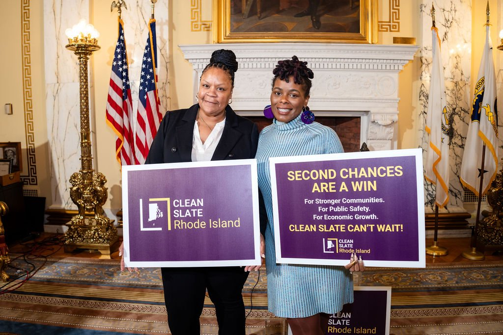
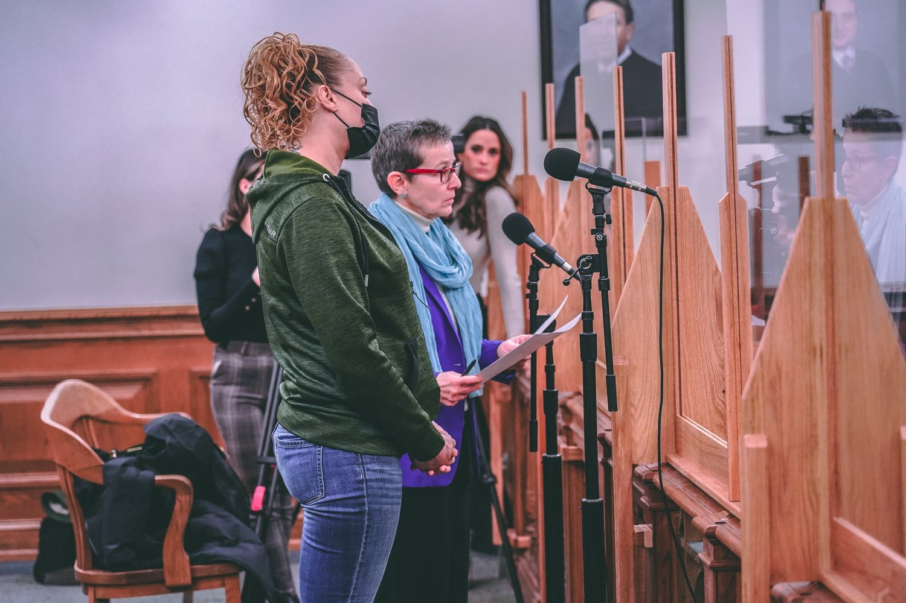
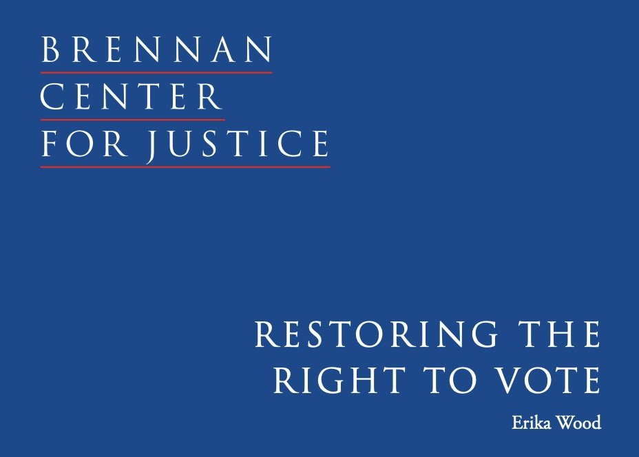
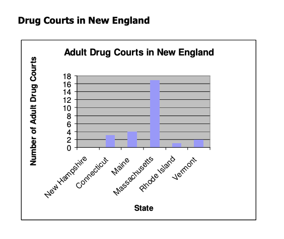
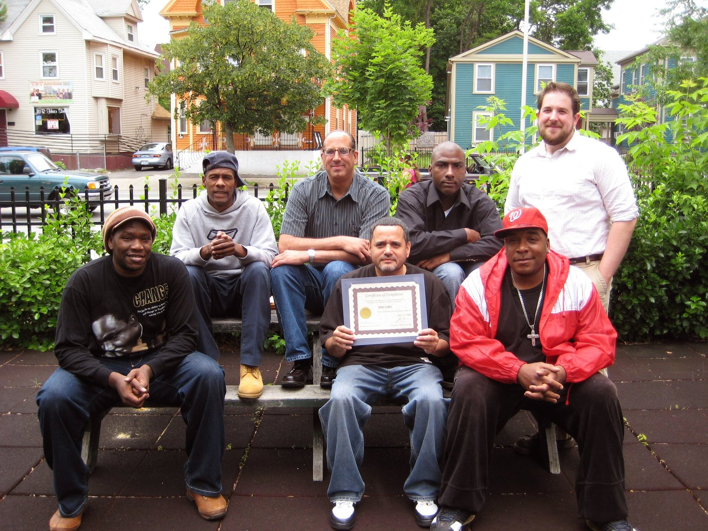

Current Open Doors Campaigns
Stop Torture in RI Prisons
OpenDoors is helping lead the Stop Torture RI campaign to restrict the use of solitary confinement and pass the Willie Washington Jr. Act to require body cameras on correctional officers.
Reducing the Incarceration of Women
With so few beds in the $17 million a year RI women’s prison, is there an opportunity to reinvest in justice?

Clean Slate Rhode Island
Clean Slate Rhode Island is a partner of the Clean Slate Initiative, a national campaign working to pass automated expungement laws in all 50 states.
Previous OpenDoors Campaigns
Innovation and Research to Reduce Recidivism
Learn MoreThe 9 Yards program estimates that from 2013-2019, it reduced felonies and prison time while saving the state money in prison costs. The evaluation report was released at a program graduation, where the participants were congratulated for the progress they made as they turned their lives around after long prison sentences.

Ending Debtor's Prisons in RI
Learn MoreEvery year, thousands of individuals sat in the Rhode Island jail, not for crimes, but because they owe money to the state. Court debt was the most common reason that people are put in jail in Rhode Island. In 2007, OpenDoors released a report that resulted in successful legislation and ultimately greatly reduced this problem in RI.
Closing the door on the overcriminalization of cannabis
Learn MoreWith the help of OpenDoors, Rhode Island became the 15th state in the country to decriminalize the possession of small amounts of marijuana in 2010. In 2022, RI finally legalized and regulated marijuana entirely.
Increasing Due Process Rights for People on Probation
Learn MorePreviously, if a person on probation was accused of a new crime, they could be sent back to prison on a probation violation. Even if they were not found guilty of the new charge, they remained in prison for long periods of time for the violation. In 2010, OpenDoors helped pass a new law that requires those accused of a new crime to be released from prison if they are found not guilty, or if the charges in the new case were dismissed.
Rethinking Arrest and Punishment for Sex Work
Learn MoreIn Rhode Island, the criminalization, arrest, and incarceration of those engaging in sex work is currently the central focus of efforts to decrease prostitution. These individuals are often poor or homeless, have substance use disorder, are the victims of physical and sexual violence, and want to leave prostitution. OpenDoors has worked to reform this process for years.

Returning the Right to Vote to Thousands of Rhode Islanders
Learn MoreIn 2006, OpenDoors led the successful effort to change the RI constitution to allow people on probation and parole to vote. The law was the first such reform to pass in the country by ballot referendum, helping usher in changes nationwide.
Expungement Reform
Learn MoreOpenDoors has worked to help support reasonable, successful expungement reform to help provide second chances to thousands of Rhode Islanders.

Addiction and Alternatives to Incarceration
Learn MoreOpenDoors helped pass legislation to expand RI Drug Courts, leading research and policy work on this topic in the state for many years.

Creating Educational Opportunities
Learn MoreSeveral studies have show that participation in a postsecondary correctional education program can reduce recidivism, thus ending the cycle of imprisonment and restoring families and communities through the power of education. OpenDoors has continued to push for these opportunities statewide.